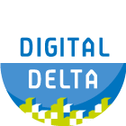

|  |
Dit is het eerste concept van de nieuwe Digitale Delta web site. Hij is nog in ontwikkeling (zowel qua inhoud als qua layout), en zal per 1 januari 2019 de oude website www.digitaldelta.nu vervangen. This is the first draft for the new Digital Delta web site. Currently it is in Dutch only. |
De Digitale Delta is een samenwerking van:
De Digitale Delta richt zich op slim en integraal waterbeheer in de breedste zin van het woord. Het doel is waterbeheergegevens eenvoudig beschikbaar te stellen aan de eigen organisatie en aan organisaties waarmee wordt samengewerkt. Door deze efficiënte uitwisseling van gegevens kan waterbeheer, ook over verschillenden stroom- en beheersgebieden, slimmer en effectiever worden uitgevoerd.
Om dit te realiseren bestaat de kern van de Digitale Delta uit heldere afspraken over het op een uniforme en waar mogelijk gestandaardiseerde manier uitwisselen van gegevens. Waterbeherende overheden, kennisinstituten en marktpartijen volgen deze afspraken.
Vanwege de gestroomlijnde informatiedeling kan snel en adequaat worden geanticipeerd op acute en structurele veranderingen in de waterhuishouding. Ketenpartijen in het waterbeheer kunnen door Digitale Delta voortbouwen op actuele, continu toenemende en verrijkte data om inzichten te bieden en beslissing ondersteunende applicaties te ontwikkelen. Waterbeherende overheden kunnen applicaties en visualisaties van verschillende leveranciers gemakkelijk en kosteneffectief combineren om tot een integrale aanpak van het waterbeheer en gebiedsontwikkeling te komen.
Beschikbare gegevens kunnen worden getoond in viewers en indien gewenst worden bijgehouden in catalogi. Deze kunnen regionaal of thematisch ingestoken zijn, of kunnen geënt zijn op gebruik binnen een operationeel kader, bijvoorbeeld voor specifieke analyses.
De data wordt ontsloten via de DD-API (Digitale Delta Application Programming Interface), die in een set van definities en regels voorziet, op basis waarvan data gevraagd en geleverd wordt. Onderstaande figuur geeft dit schematisch weer. Zie de DD-API pagina voor meer details.
In 2019 zal hetÿInformatiehuis Water (IHW) zorg gaan dragen voor het functionele beheer van de API?s. Daartoe worden twee teams ingesteld:
Digitale Delta is opgezet voor de gehele keten, die betrokken is bij het beheer van nationale en regionale (oppervlakte)watersystemen. Tot de beoogde gebruikers behoren daarmee overheden, programmabureaus, kennisinstituten, informatiehuizen, adviesbureaus en aannemerijen binnen de watersector.
Voor overheden die een databron willen ontsluiten, voor ontwikkelaars die een informatie- of visualisatieapplicatie willen ontwikkelen en voor adviesbureaus die binnen adviesprojecten gebruik willen maken van de mogelijkheden die Digitale Delta biedt, neem contact op of vul het formulier hieronder in (contactformulier volgt).
Een gedetailleerdere beschrijving van de opzet van Digitale Delta is te vinden op de DD-API pagina